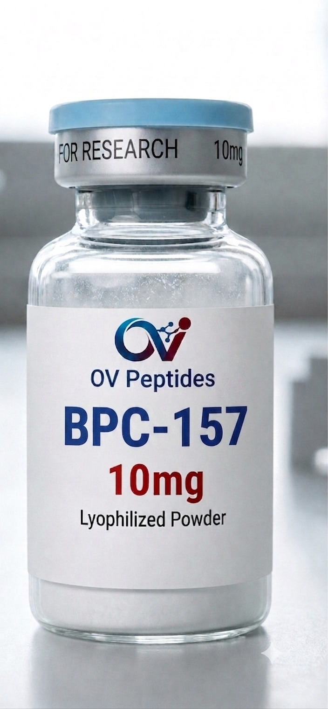
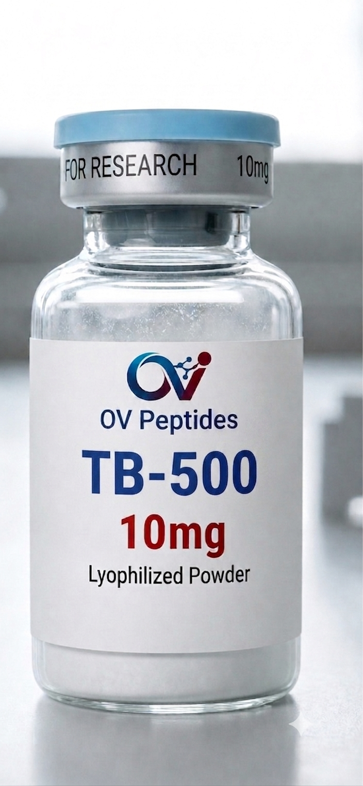
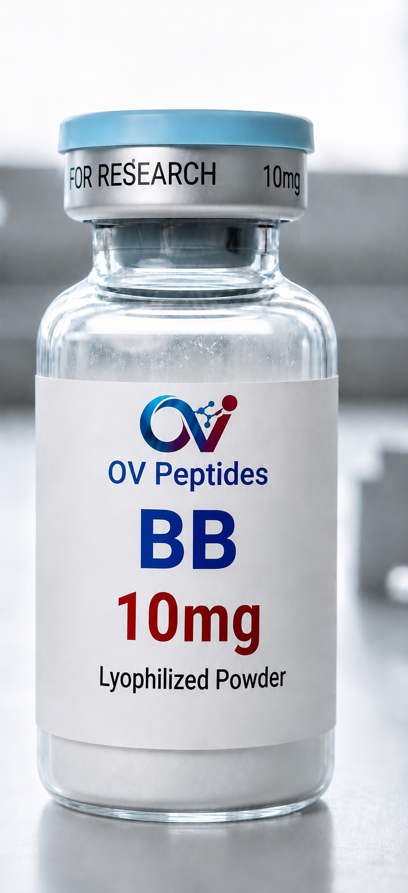
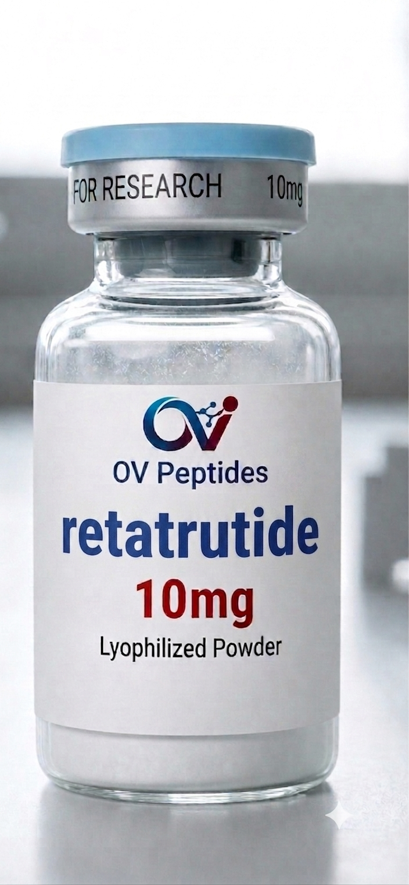
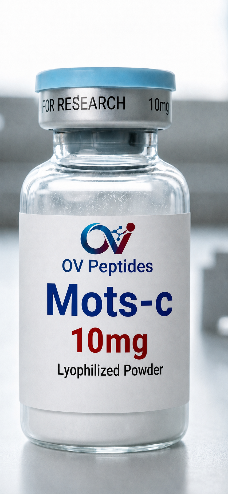
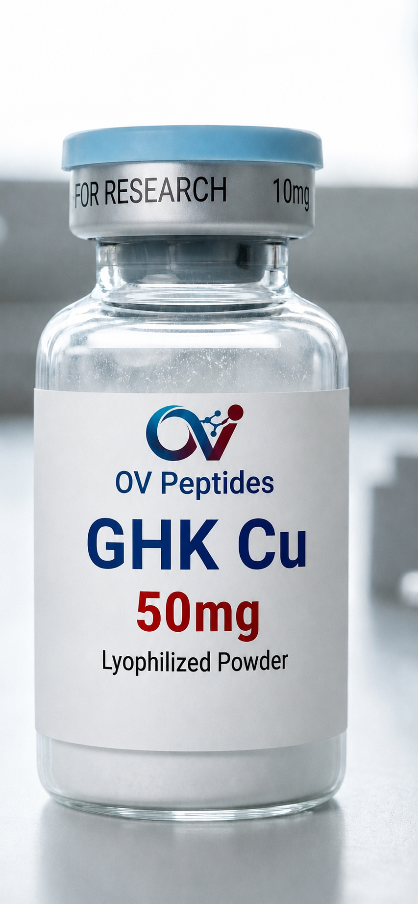
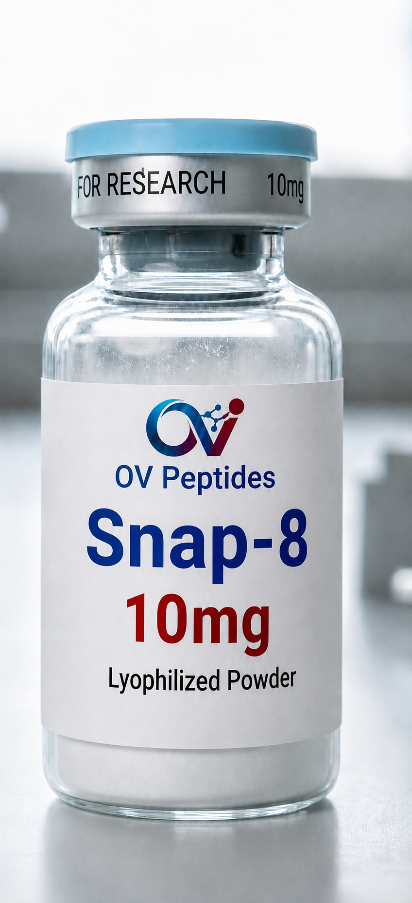
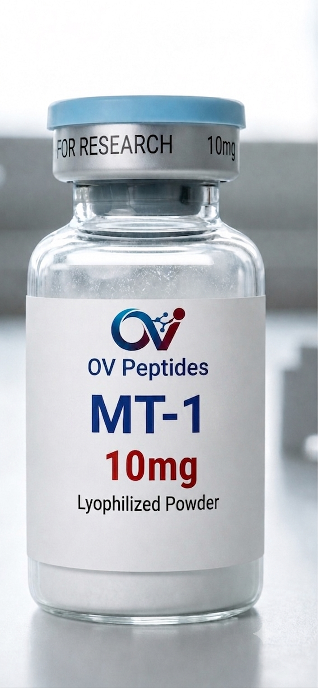
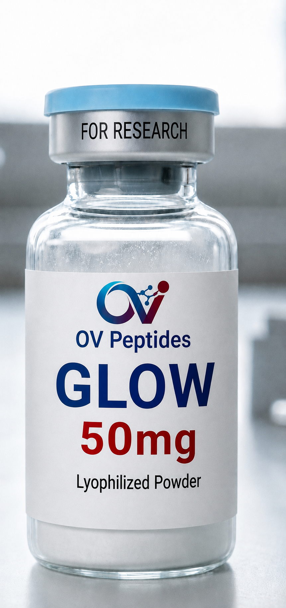
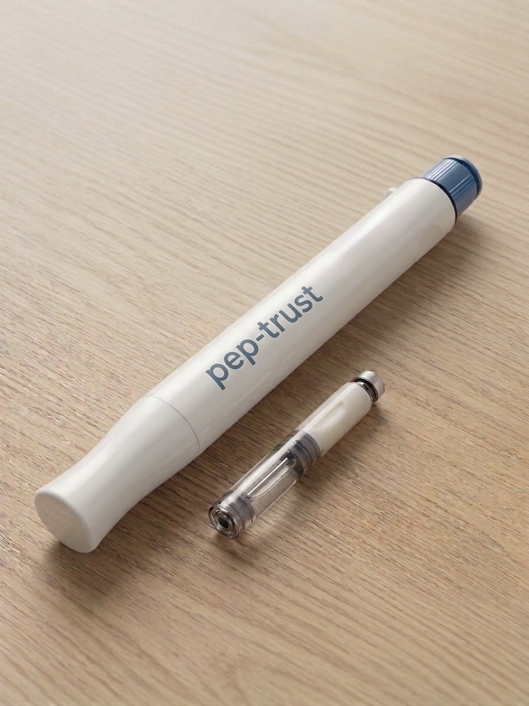

Peptides de recherche par catégorie
Fiches informatives sur les composés étudiés en laboratoire, classées par domaine de recherche. Contenu à visée documentaire, ne remplace pas la littérature scientifique primaire.
Réparation & récupération tissulaire
Composés étudiés pour leur rôle dans les mécanismes cellulaires de réparation et de régénération.

BPC-157
Peptide de recherche largement documenté dans la littérature préclinique pour son interaction avec les voies de signalisation cellulaire impliquées dans la réparation tissulaire et la modulation de l'inflammation, étudiées en modèle in vitro.
Détails scientifiques
Dans les modèles précliniques, BPC-157 active des voies dépendantes et indépendantes du VEGF (VEGFR2–PI3K–Akt–eNOS ; Src–cavéoline-1–eNOS) conduisant à la production de monoxyde d'azote, ce qui soutient l'angiogenèse et la stabilité vasculaire dans les tissus peu vascularisés comme les tendons. Des études sur tendon d'Achille lésé ont rapporté une augmentation notable de l'expression de VEGFR2 après exposition, ainsi qu'une régulation à la hausse du récepteur de l'hormone de croissance dans les fibroblastes tendineux.
- Emerging Use of BPC-157 in Orthopaedic Sports Medicine — Systematic Review, PMC
- BPC 157 Enhances Growth Hormone Receptor Expression in Tendon Fibroblasts, PMC
Stabilité : forme lyophilisée stable à -20°C à l'abri de la lumière et de l'humidité. Une fois reconstitué en conditions de laboratoire, conserver au réfrigérateur (2–8°C) et utiliser dans les meilleurs délais pour préserver l'intégrité du peptide.
Vérification du stock…

TB-500
Fragment peptidique étudié pour son rôle dans la migration cellulaire et les mécanismes de régénération à l'échelle systémique. Sujet de recherche fréquent en biologie cellulaire expérimentale.
Détails scientifiques
TB-500 est le fragment synthétique actif de la thymosine bêta-4, une protéine intracellulaire séquestrant la G-actine. Son motif fonctionnel LKKTETQ régule la polymérisation de l'actine, un mécanisme étudié en biologie cellulaire pour son implication dans la motilité et la migration cellulaires lors de processus de réparation tissulaire in vitro.
Stabilité : forme lyophilisée stable à -20°C à l'abri de la lumière et de l'humidité. Une fois reconstitué en conditions de laboratoire, conserver au réfrigérateur (2–8°C) et utiliser dans les meilleurs délais pour préserver l'intégrité du peptide.
Vérification du stock…

Blend BPC-157 / TB-500
Préparation associant les deux composés dans un même flacon, utilisée en recherche pour étudier conjointement les mécanismes de réparation localisée et de régénération systémique.
Détails scientifiques
Cette préparation associe BPC-157, étudié pour son activation des voies VEGFR2–PI3K–Akt–eNOS soutenant l'angiogenèse locale, et TB-500, étudié pour sa régulation de la polymérisation de l'actine via son motif LKKTETQ. En recherche, l'intérêt de cette association réside dans l'étude conjointe d'un mécanisme de réparation localisée (BPC-157) et d'un mécanisme de migration cellulaire à portée plus systémique (TB-500).
- Emerging Use of BPC-157 in Orthopaedic Sports Medicine — Systematic Review, PMC
- Thymosin beta 4: a ubiquitous peptide implicated in cell motility and repair, PubMed
Stabilité : forme lyophilisée stable à -20°C à l'abri de la lumière et de l'humidité. Une fois reconstitué en conditions de laboratoire, conserver au réfrigérateur (2–8°C) et utiliser dans les meilleurs délais.
Vérification du stock…
Métabolisme & composition corporelle
Composés étudiés pour leur interaction avec les voies de régulation métabolique.

Rétatrutide
Composé de recherche étudié comme agoniste triple des récepteurs GLP-1, GIP et glucagon — trois voies impliquées dans la régulation de l'homéostasie énergétique. Sujet d'intérêt en pharmacologie métabolique expérimentale.
Détails scientifiques
La rétatrutide est un peptide de 39 acides aminés conçu comme agoniste unimoléculaire des trois récepteurs GLP-1, GIP et glucagon. Les données de pharmacologie moléculaire publiées décrivent sa puissance et sa sélectivité relative sur chacun des trois récepteurs, un profil étudié pour comprendre l'intégration de ces voies incrétines et glucagonergiques dans la régulation de l'homéostasie énergétique cellulaire.
- Retatrutide, a GIP, GLP-1 and glucagon receptor agonist — Nature Medicine
- Pharmacological characterization of triple receptor agonism, PMC
Stabilité : forme lyophilisée stable à -20°C à l'abri de la lumière et de l'humidité. Une fois reconstitué en conditions de laboratoire, conserver au réfrigérateur (2–8°C) et utiliser dans les meilleurs délais.
Vérification du stock…

MOTS-c
Peptide mitochondrial étudié en recherche comme capteur métabolique, notamment pour son interaction avec la voie de signalisation AMPK impliquée dans la régulation énergétique cellulaire.
Détails scientifiques
MOTS-c est un peptide de 16 acides aminés codé par l'ADN mitochondrial. Il est étudié pour son rôle de capteur métabolique via la voie folate–AICAR–AMPK, avec une translocation nucléaire en réponse au stress métabolique observée en modèle cellulaire, ainsi qu'une interaction avec le transporteur de glucose GLUT4 dans les études sur le métabolisme énergétique musculaire.
- MOTS-c: A Mitochondrial-Derived Peptide and Metabolic Regulator, PMC
- MOTS-c: A Mitochondrial-Derived Peptide Regulating Metabolism — Cell Metabolism
Stabilité : forme lyophilisée stable à -20°C à l'abri de la lumière et de l'humidité. Une fois reconstitué en conditions de laboratoire, conserver au réfrigérateur (2–8°C) et utiliser dans les meilleurs délais.
Vérification du stock…
Peau, esthétique & pigmentation
Composés étudiés pour leurs interactions cellulaires au niveau cutané.

GHK-Cu
Peptide de signalisation lié au cuivre, étudié in vitro pour son rôle dans les processus cellulaires de réparation tissulaire et la stimulation de la synthèse de collagène et d'élastine.
Détails scientifiques
Le complexe GHK-Cu est un tripeptide naturel à forte affinité pour le cuivre(II). La littérature de recherche décrit son implication dans la modulation de l'expression de gènes liés au remodelage tissulaire, ainsi que son interaction avec des enzymes comme la lysyl oxydase, impliquée dans la maturation du collagène et de l'élastine en modèle cellulaire.
Stabilité : forme lyophilisée stable à -20°C à l'abri de la lumière et de l'humidité. Une fois reconstitué en conditions de laboratoire, conserver au réfrigérateur (2–8°C) et utiliser dans les meilleurs délais.
Vérification du stock…

SNAP-8
Peptide de recherche cosmétique dérivé de l'Argireline, étudié pour son interaction avec le complexe SNARE au niveau de la jonction neuromusculaire, en application topique de laboratoire uniquement.
Détails scientifiques
SNAP-8 est un octapeptide de synthèse dérivé de la famille des inhibiteurs du complexe SNARE (dont fait partie l'Argireline), étudié en recherche cosmétique pour son interaction compétitive avec les protéines impliquées dans la fusion vésiculaire au niveau de la jonction neuromusculaire. Ce mécanisme en fait un sujet d'étude fréquent en biologie cellulaire de la contraction musculaire, en application topique de laboratoire.
Stabilité : forme lyophilisée stable à -20°C à l'abri de la lumière et de l'humidité. Une fois reconstitué en conditions de laboratoire, conserver au réfrigérateur (2–8°C) et utiliser dans les meilleurs délais.
Vérification du stock…

MT-1
Peptide analogue de l'hormone alpha-MSH, étudié en modèle cellulaire pour son interaction avec les récepteurs MC1R impliqués dans la voie de mélanogenèse.
Détails scientifiques
Le MT-1 (Melanotan I) est un analogue synthétique de l'hormone alpha-mélanotrope (α-MSH), étudié pour son activité agoniste sur le récepteur MC1R. Cette liaison active la voie de signalisation cAMP–PKA–CREB, régulant l'expression du facteur de transcription MITF et, en aval, l'activité de la tyrosinase impliquée dans la synthèse de mélanine en modèle cellulaire.
Stabilité : forme lyophilisée stable à -20°C à l'abri de la lumière et de l'humidité. Une fois reconstitué en conditions de laboratoire, conserver au réfrigérateur (2–8°C) et utiliser dans les meilleurs délais.
Vérification du stock…

GLOW
Préparation combinée destinée à l'étude conjointe des voies de réparation tissulaire, de régénération cutanée et de récupération cellulaire au sein d'un même modèle de recherche.
Détails scientifiques
Ce blend associe trois composés aux mécanismes complémentaires étudiés en recherche : le GHK-Cu pour son interaction avec les enzymes du remodelage du collagène et de l'élastine, le BPC-157 pour son activation des voies angiogéniques VEGFR2–PI3K–Akt–eNOS, et le TB-500 pour sa régulation de la polymérisation de l'actine via le motif LKKTETQ. L'intérêt en recherche est l'étude conjointe de ces trois axes — remodelage cutané, réparation localisée et migration cellulaire — dans un même modèle expérimental.
- The Human Tri-peptide GHK and Tissue Remodeling, PMC
- Emerging Use of BPC-157 in Orthopaedic Sports Medicine, PMC
Stabilité : forme lyophilisée stable à -20°C à l'abri de la lumière et de l'humidité. Une fois reconstitué en conditions de laboratoire, conserver au réfrigérateur (2–8°C) et utiliser dans les meilleurs délais.
Vérification du stock…
Matériel de laboratoire
Dispositifs et accessoires utilisés pour la préparation en contexte de recherche.

Stylos double chambres RT10
Stylo réutilisable à double chambre, conçu pour séparer un composé lyophilisé de son diluant jusqu'à la reconstitution en laboratoire. Référence RT10.
AcheterVerification du stock
Vous cherchez une référence non listée ?
Contactez-nous pour toute question sur une référence de recherche spécifique ou pour vérifier la disponibilité d'un lot.
Nous contacter